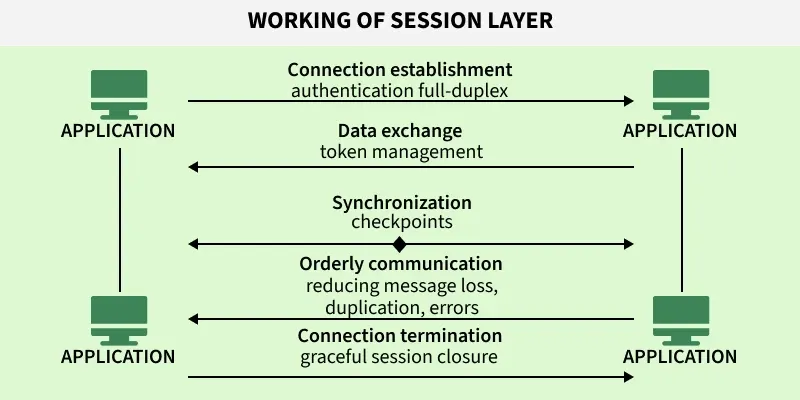

OSI Layers 5, 6 & 7 — Session, Presentation & Application#
Scope: the three upper layers. How conversations are opened, kept in sync and closed; how data is translated, compressed and encrypted; and how applications actually speak to the network.
Source: extracted and reorganised from
md/DOCUMENTATIONS ...md→SYSTEM_DESIGN vs BACKEND→PREVIOUS, OSI LAYERS, API DESIGN, Networking Essentials→OSI layers-(Open System Interconnection).
0. Where these layers sit#
| # | Layer | Job in one line | Typical protocols |
|---|---|---|---|
| 7 | Application | Provides network services to user software | HTTP, DNS, SMTP, FTP, SSH |
| 6 | Presentation | Translates, compresses, encrypts data | TLS, SSL, XDR, NDR |
| 5 | Session | Opens, synchronises and closes conversations | RTCP, PPTP, RPC, SDP |
A practical caveat worth stating up front: in the real TCP/IP stack these three layers are collapsed into one application layer. Many Layer 5 and Layer 6 functions are absorbed by the Transport layer or by the application protocol itself. They remain useful as conceptual categories, which is how they are taught and how they are asked about in interviews.
1. Session Layer (Layer 5)#
1.1 Overall#
- Operates at Layer 5 of the OSI model.
- Manages session setup, maintenance, and termination.
- Controls dialogue: who sends and receives, and when.
- Provides synchronisation and recovery mechanisms.
- Many of its functions are integrated into the Transport or Application layers in modern TCP/IP networks.
1.2 Key functions#
- Session establishment — initiates and negotiates communication parameters, such as authentication and duplex mode.
- Communication synchronisation — keeps data streams in order using checkpoints.
- Activity and dialog management — controls turns, prevents collisions, and avoids duplication.
- Resynchronisation and recovery — recovers from failures using synchronisation points.
- Session termination — gracefully ends communication after all data is exchanged.
1.3 Flow#

- Establishes and negotiates session parameters, for example authentication and duplex mode.
- Manages token-based dialogue control to avoid collisions.
- Inserts synchronisation checkpoints for recovery from failures.
- Ensures data integrity by reducing duplication or message loss.
- Gracefully terminates the session after confirming all data has been exchanged.
Why checkpoints matter#
If a 1 GB transfer fails at 900 MB, a session with checkpoints resumes from the last checkpoint rather than restarting. This is the conceptual ancestor of HTTP range requests and resumable uploads.
1.4 Protocols#
ADSP — AppleTalk Data Stream Protocol#
Developed by Apple for LAN communication with self-configuration support.
- Provides a reliable, ordered byte-stream connection between devices on an AppleTalk network.
- Uses connection-oriented communication similar to TCP.
- Handles error detection, retransmission, and flow control automatically.
- Supports self-configuring network communication within Apple's AppleTalk suite.
- Was mainly used for Mac-to-Mac or printer and file sharing in old Apple LANs.
Is it only for the Apple ecosystem? Yes.
- ADSP is only for Apple's old AppleTalk ecosystem.
- Designed for Mac computers, printers, and devices in Apple LAN networks.
- Not used on the modern internet or on non-Apple systems.
- Today it is obsolete, replaced by TCP/IP protocols such as HTTP, TCP, and QUIC.
- Practically, it existed only in legacy Apple network environments.
RTCP — Real-time Transport Control Protocol#
Provides QoS feedback for RTP-based multimedia sessions.
- Works with RTP (Real-time Transport Protocol) to transmit media data like voice and video.
- Provides feedback about network quality: packet loss, delay, jitter.
- Helps adjust Quality of Service during streaming.
- Does not carry media itself, only control and monitoring data.
- Commonly used in VoIP, video calls, and live streaming systems.
How RTCP is implemented
- RTP carries the audio and video data.
- RTCP carries the control and feedback data.
- Both run over UDP ports, conventionally:
RTP → even UDP port
RTCP → next odd UDP portExample:
RTP: 5004
RTCP: 5005Other Layer 5 protocols#
- PPTP (Point-to-Point Tunnelling Protocol) — enables VPNs over TCP/IP. Now considered cryptographically broken; use IPSec or WireGuard instead.
- PAP (Password Authentication Protocol) — password-based user authentication in PPP connections. Sends credentials in the clear, so CHAP or EAP is preferred.
- RPCP (Remote Procedure Call Protocol) — allows a program to execute procedures in another address space, the basis of client-server interaction. The modern descendant is gRPC.
- SDP (Sockets Direct Protocol) — supports socket communication over RDMA-enabled networks.
1.5 Devices#
- Firewalls — monitor and control sessions for security.
- Proxy servers — act as intermediaries, managing sessions between clients and servers.
- Session Border Controllers (SBCs) — secure and manage VoIP sessions.
- Application servers — create and maintain user sessions for applications.
1.6 Where Layer 5 shows up in backend work#
Even though the OSI session layer is not implemented as a separate layer in TCP/IP, the idea is everywhere in backend systems:
| Concept | Modern equivalent |
|---|---|
| Session establishment | Login, JWT issuance, OAuth token grant |
| Session state | Cookies, server-side session stores, Redis session cache |
| Dialogue control | Request/response vs WebSocket full-duplex messaging |
| Checkpoints | Resumable uploads, HTTP range requests, Kafka consumer offsets |
| Graceful termination | Connection draining, SIGTERM handling before shutdown |
2. Presentation Layer (Layer 6)#
2.1 Overview#
The Presentation Layer is the 6th layer of the OSI model, responsible for ensuring that data is properly formatted, translated, encrypted, and compressed so different systems can understand each other.
It acts as a translator between the Application Layer and the lower layers of the network stack.
2.2 Key responsibilities#
- Ensures data compatibility between different systems.
- Handles data formatting and structure, both syntax and semantics.
- Provides encryption and decryption.
- Applies data compression.
- Acts as a data translation layer.
2.3 Role in the OSI model#
Sender side
- Converts application data into a standard transferable format.
- Encrypts and compresses data.
- Passes data to the Session layer.
Receiver side
- Decrypts data.
- Decompresses data.
- Converts it back into an application-readable format.
2.4 Functions#
1. Data translation#
Converts data formats between systems, for example ASCII ↔ Unicode, JSON ↔ XML.
2. Data compression#
Reduces data size to save bandwidth and improve transmission speed.
3. Encryption and decryption#
Encrypts data for security before transmission, decrypts it after reception.
4. Syntax and semantics management#
Ensures the data structure (syntax) is correct and the meaning (semantics) is preserved.
5. Transfer syntax negotiation#
Agrees on the encoding type, compression method, and data representation format.
6. Interoperability#
Enables communication between different operating systems, different architectures, and different data formats.
2.5 Services provided#
- Encryption and decryption
- Compression
- Format translation
- Cross-platform compatibility
2.6 Working of the Presentation layer#
Sender side — Application Layer → Presentation Layer:
- Format data
- Compress data
- Encrypt data
- Pass to Session Layer
Receiver side — Session Layer → Presentation Layer:
- Decrypt data
- Decompress data
- Convert to readable format
- Pass to Application Layer
Note the ordering. On the way out you compress then encrypt; on the way in you decrypt then decompress. Compressing after encryption is useless, because ciphertext has no redundancy left to squeeze out.
2.7 Protocols#
- SSL (Secure Socket Layer) — legacy secure communication. Deprecated; all versions are broken.
- TLS (Transport Layer Security) — modern secure protocol. TLS 1.3 is current.
- XDR (External Data Representation) — data encoding standard.
- NDR (Network Data Representation) — data representation format.
- AFP (Apple Filing Protocol) — file services for macOS.
- NCP (NetWare Core Protocol) — file and print services for Novell systems.
- LPP (Lightweight Presentation Protocol) — ISO presentation services over TCP/IP.
A note on where TLS really sits#
TLS is classified here because it does encryption and format negotiation. In the TCP/IP model it runs directly on top of TCP and below the application protocol, which is why it is sometimes called a Layer 5, 6, or "Layer 6.5" protocol depending on the textbook. The classification matters less than the mechanism.
2.8 Attacks on the Presentation layer#
Man-in-the-Middle (MITM)#
Intercepts communication to steal or modify data.
SSL/TLS downgrade attack#
Forces weaker encryption protocols to break security. Mitigated by HSTS and by TLS 1.3 removing legacy cipher suites entirely.
Certificate spoofing#
Uses fake certificates to impersonate trusted servers. Mitigated by certificate pinning and Certificate Transparency logs.
Code injection#
Exploits parsing and formatting vulnerabilities in data handling. Deserialisation bugs in JSON, XML, and binary formats are the modern form of this.
2.9 Key ideas#
The Presentation Layer ensures data is in a format both sender and receiver can understand securely and efficiently.
One-line summary: the Presentation Layer is responsible for translating, encrypting, and compressing data so that different systems can communicate correctly and securely.
3. Application Layer (Layer 7)#
3.1 Overview#
The Application Layer is the topmost layer of the OSI model, and it interacts directly with end-user applications. It provides network services to software such as browsers, email clients, file transfer tools, and remote login systems.
3.2 Key role#
- Acts as the interface between user applications and the network.
- Provides network services to applications.
- Enables communication between software and remote systems.
- Handles user-level network interactions.
3.3 Important clarification — a common confusion#
Application Layer ≠ the applications themselves.
It provides services for applications, not the apps themselves.
Example:
- Chrome = the application.
- HTTP = the Application Layer protocol that Chrome uses.
3.4 Core functions#
1. Data representation#
Converts user data into network format and received data into readable format. Example: HTML, JSON, XML formatting.
2. Network service access#
Provides direct access to network services. Example: email through Gmail or Outlook, file downloads over FTP or HTTP.
3. Application protocol handling#
Defines rules for communication between applications. Example: HTTP for web browsing, SMTP for email sending, DNS for name resolution.
4. Session management (logical concept here)#
Maintains communication sessions, starts and ends application-level interactions. Example: a login session on a website, an SSH connection session.
5. Resource sharing#
Enables sharing of files, printers, and services.
3.5 How it works step by step#
Sender side
- User requests an action, for example opening a website.
- The Application Layer formats the request.
- Sends it to the lower layers: Presentation → Session → Transport.
Receiver side
- Data arrives from the network.
- The Application Layer processes it.
- Converts it into readable output for the user.
3.6 Services provided#
- File transfer
- Email communication
- Web browsing
- Remote login
- Name resolution
- Network resource sharing
3.7 Key protocols#
Web and communication#
- HTTP / HTTPS — web browsing.
- WebSocket — real-time, full-duplex communication.
Email#
- SMTP — send emails.
- IMAP / POP3 — receive emails.
Name resolution#
- DNS — converts a domain name to an IP address.
File transfer#
- FTP — file transfer.
- SFTP — secure file transfer.
- NFS — network file system access.
Network management#
- SNMP — device monitoring and management.
System services#
- DHCP — assigns IP addresses automatically.
- TELNET — remote login. Insecure and outdated.
- SSH — secure remote login.
3.8 Modern additions#
1. HTTP/3 uses QUIC#
The modern web stack is HTTP/3 → QUIC → UDP, replacing HTTP/2 → TLS → TCP. See the QUIC section in the Layer 3 & 4 document for why.
2. The Application Layer handles logic, not transport#
It decides what to send, when to send, and how to interpret the data. It does not decide how the data physically moves.
3. It runs on top of everything#
Application
↓
Presentation
↓
Session
↓
Transport
↓
Network
↓
Data Link
↓
Physical3.9 Security considerations#
Common attacks at this layer:
- MITM (Man-in-the-Middle)
- DNS spoofing
- Session hijacking
- Credential theft
Add to those the ones that dominate real backend incident reports: injection (SQL, command, template), broken access control, and application-layer denial of service such as HTTP floods and slowloris.
3.10 Key ideas#
The Application Layer is where network meaning is created. It defines what the data means, not how it moves.
One-line summary: the Application Layer provides network services directly to user applications and defines protocols for communication like HTTP, DNS, SMTP, and FTP.
4. REST vs RESTful API#
Included here because it is the Layer 7 design vocabulary you will actually be asked about.
4.1 The difference#
- REST is an architectural style, a set of rules and constraints for designing APIs and web services.
- RESTful API is an actual API built following REST principles.
In short: REST = concept and rules. RESTful API = implementation of those rules in real systems.
4.2 Definitions#
- REST (Representational State Transfer) is an architectural style for designing networked applications where resources are accessed using standard HTTP methods.
- A RESTful API is an API that follows REST principles such as stateless communication, resource-based URLs, and standard methods: GET, POST, PUT, DELETE.
- It is widely used in web services because it is simple, scalable, and works over HTTP.
4.3 Sample usage#
A real working API built using REST rules.
GitHub API
GET https://api.github.com/users
GET https://api.github.com/users/octocatE-commerce API
GET /products
POST /products
PUT /products/10
DELETE /products/104.4 Takeaway#
- REST = rules and design style.
- RESTful API = a real API built using those rules.
5. Quick revision sheet#
| Question | Layer 5 | Layer 6 | Layer 7 |
|---|---|---|---|
| Job | Manage conversations | Translate and secure | Serve applications |
| Key verbs | Establish, sync, terminate | Encode, compress, encrypt | Request, respond, interpret |
| Protocols | RTCP, PPTP, RPC, SDP, PAP | TLS, SSL, XDR, NDR, AFP | HTTP, DNS, SMTP, FTP, SSH |
| Devices | Firewall, proxy, SBC, app server | none specific | none specific |
| Attacks | Session hijacking | MITM, TLS downgrade, cert spoofing | DNS spoofing, injection, credential theft |
| In TCP/IP | Folded into the application layer | Folded into the application layer | The application layer |
One sentence each
- Layer 5 decides when a conversation starts, whose turn it is, and when it ends.
- Layer 6 makes sure both sides read the bytes the same way, and that nobody else can.
- Layer 7 gives the bytes meaning, and is the only layer a user ever sees.
Previous: OSI Layers 3 & 4 — Network & Transport